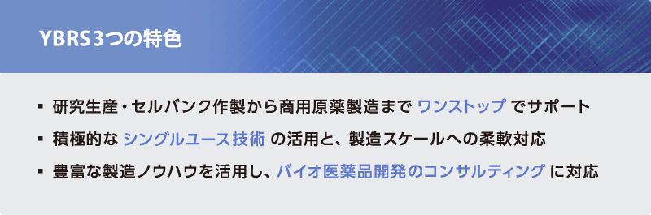
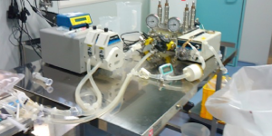
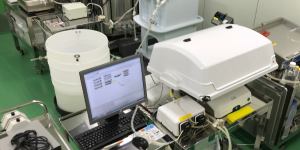

技術紹介

シングルユースシステム

シングルユースシステムとは、シングルユース(一回使い捨て)パーツを組み合わせて構築した製造工程及びその技術を指します。シングルユースシステムの利点として以下が挙げられます。
- 工程の柔軟性
パーツの組み合わせ方によって、培養サイズや培養制御方法をその都度変更できるため、製造工程を柔軟に変更・選択する事ができる。
固定配管式と比較して導入コストが安価である。そのため、同じ工程を他所にて再現する事が容易である。 - 迅速性
動作確認が取れている組み合わせであれば、パーツの組み合わせ後すぐに稼働する事ができるため、生産工程の構築から稼働までを迅速に行う事ができる。
又、シングルユースのため、洗浄と洗浄バリデーションの時間が不要であり、製品の切り替え時間を短縮する事ができる。 - 堅牢性
毎回新しいパーツで接液部工程を構築するため、複数品目を生産するCDMOにおいても、交差汚染のリスクが低減される。
YBRSでは、YBIRD稼働時(2011年4月)から他社に先駆けてシングルユースシステムを実製造に利用、そのノウハウを蓄積してきました。使用パーツは、適格性評価や無菌性等のバリデーションが製造元によって行われている医薬品GMP対応商品の中から、製品特性を考慮して用途に合う最良なものを選択しております。
お客様からのご依頼に対し、「多品種製造」「製造の条件検討」「治験薬」等、工程が頻繁に変わる製造においても柔軟に対応致します。
WAVEバイオリアクターによるパーフュージョン培養

WAVEバイオリアクターとは、GE Healthcare社が販売している細胞培養装置です。シングルユースシステムで稼働し、波型振盪(ロッキング式)による通気・撹拌が特徴です。そして、パーフュージョン培養とは、小容量でより高密度や長期間の細胞培養をするために開発された連続培養手法の1つです。「WAVEバイオリアクターによるパーフュージョン培養」とは、この2つを組み合わせた培養法であり、バイオ医薬品をはじめとする細胞産生タンパク質の製造効率を飛躍的に上げる可能性を秘めています。しかし培養条件が変化することにより産生されるタンパク質の糖鎖構造の変化を引き起こすことが知られており、パーフュージョン培養のように長期間培養した場合に医薬品として求められる品質・有効性・安全性を考慮すると産生されるタンパク質の均一性を如何に担保していくかという事が重要になってきます。
そこで、YBRSでは、「WAVEバイオリアクターによるパーフュージョン培養」の可能性とバイオ医薬品の実製造をつなげるべく、日本医療研究開発機構の革新的バイオ医薬品創出基盤技術開発事業において横浜市立大学・川崎ナナ教授を代表とするチームの一員として、「糖タンパク質バイオ医薬品の糖鎖の高機能化のための解析・制御・管理システムの開発」という研究でWAVEバイオリアクターによるパーフュージョン培養における糖鎖構造が最適化された抗体を製造する事を可能にする工程開発システムの構築を行っています。
リンク
- 横浜市立大学創薬再生科学研究室川崎ナナグループ
http://www.tsurumi.yokohama-cu.ac.jp/proteome/nana/japanese/ - 国立研究開発法人 日本医療研究開発機構
https://www.amed.go.jp/ - 日本医療研究開発機構 革新的バイオ医薬品創出基盤技術開発事業
http://www.i-biomed.jp/
細胞培養に重要なのは、細胞にとって生育しやすい環境を整える事です。現在、その条件を整えるために様々な培養液や培養装置が開発されています。その中で、酸素供給と栄養供給についてはそれぞれ大きく3つの方式があります。
酸素供給に対する通気・撹拌システムには、フラスコサイズの育種に最適な「回転振盪」「往復振盪」、円筒形の大型培養槽(Jarファーメンター)に対応した「羽根車による撹拌」及びWAVEバイオリアクターが採用している「波型振盪(ロッキング)」などがあげられます。「回転振盪」による通気・撹拌では、フラスコのサイズ・形状と回転数によって培養細胞へ最適な条件が整えられます。「羽根車による撹拌」では、羽の形状(平羽タービン型、エレファントイヤー型、パドル型等)と回転数、培養液内への空気の吹き込み量によって制御します。WAVEバイオリアクターによる「波型振盪」では、培養槽中の空気層の酸素分圧と振盪数によって制御しています。
栄養供給に関する方法としては、「バッチ」、「フェドバッチ」、「パーフュージョン」などの方法が実用化されています。「バッチ」培養は播種時の培養液のまま培養を続ける方法で、栄養の枯渇によって細胞の増殖・生存が止まります。細胞を植え継ぎながら維持する場合に一般的に用いられる方法です。「フェドバッチ」培養とは、培養途中で栄養等を加えて培養期間を延ばす方法で、有害代謝産物の蓄積により培養の増殖・生存が止まります。現行の抗体産生においてはこの方法が主流として採用されています。「パーフュージョン」培養は、培養液を入れ替えながら培養をする方法で、栄養を添加するフェドバッチ培養の利点に加え、有害代謝産物の蓄積を抑える事で培養の増殖・生存期間をより延長できます。パーフュージョン培養では、さらに培養期間を延ばすために培養液中の細胞密度を調節する、「セルブリード」という方法と組み合わせることもあります。
WAVEバイオリアクターによるパーフュージョン培養は、上記各方式の中から「波型振盪」・「パーフュージョン」「セルブリード」を組み合わせた方法を採用しています。
YBRSは、WAVEバイオリアクターによるパーフュージョン培養以外にも、各種組み合わせの培養方法を採択しており、お客様からのご依頼に対し、培養対象(細胞・微生物)の性質・期間・製造品の性質などを考慮の上、最良な培養方法をご提案させていただいております。